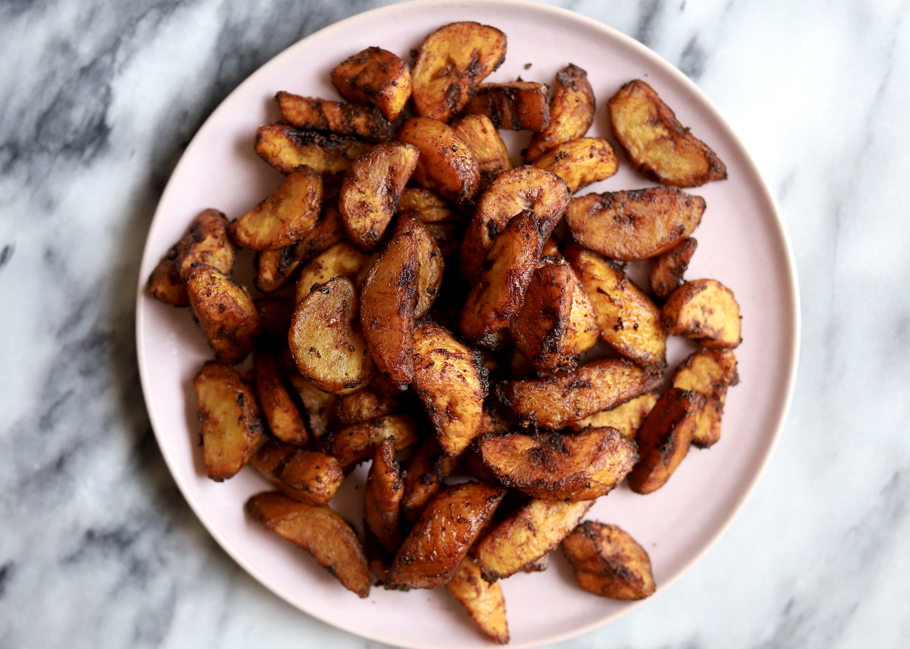
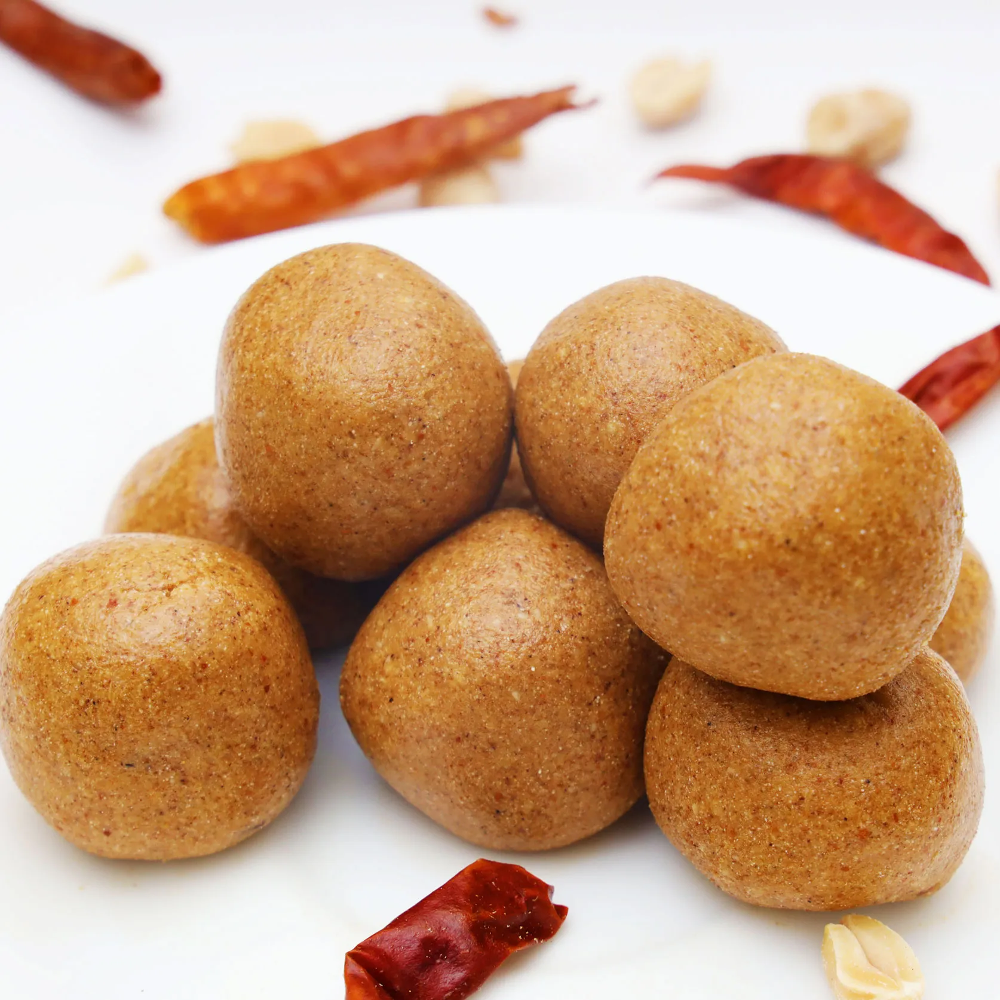
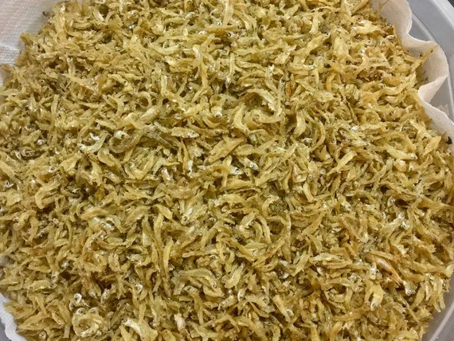
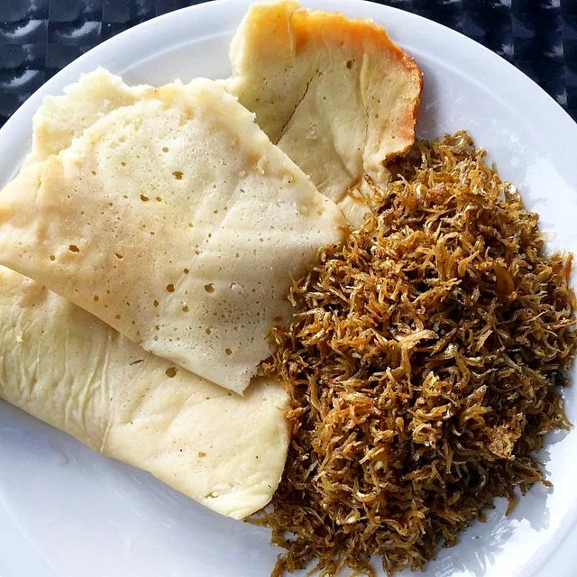
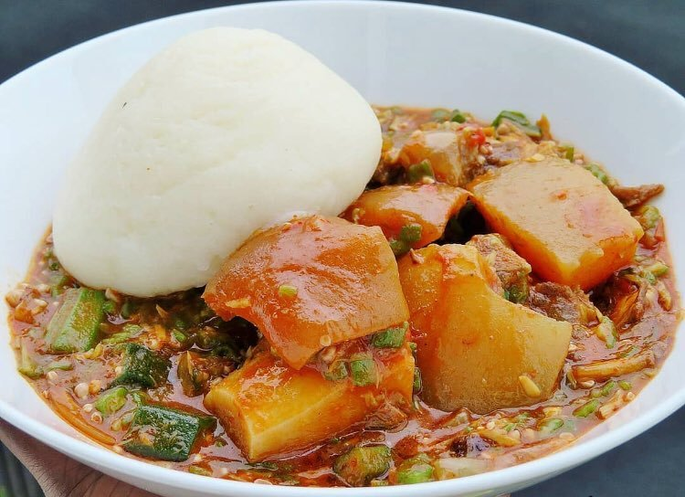
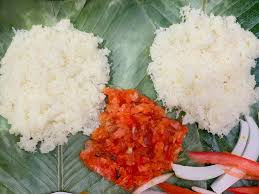

.png)

In Ghana kelewele is a popular street food served my vendors across the city. It is simply fried spiced plantain served alone, as a side or with other finger food like roasted peanuts. The recipe for kelewele is extremely easy to make and quite honestly makes the perfect snack. I like to use plantain that is just ripe to make mine but if you want sweeter, softer kelewele with an oval darker finish after frying due to the caramelization of the plantain. If you have been looking for a different way to change up your normal fried plantain try this recipe out.
1. 1 quart vegetable oil for frying, or as needed
2. 1 small onion, cut into chunks
3. 3 tablespoons grated fresh ginger, or more to taste
4. 2 whole cloves, crushed
5. 5 ripe plantains, diced into 1/3-inch chunks
6. 3 tablespoons ground chile pepper
7. salt to taste
STEP ONE:
Heat oil in a deep-fryer or large saucepan to 350 degrees F (175 degrees C).
STEP TWO:
While the oil is heating, purée onion in a blender until smooth. Stir in ginger and cloves.
STEP THREE:
Place plantains in a bowl and pour onion mixture over top. Add chile pepper and salt; mix until plantains are coated.
STEP FOUR:
Fry plantains in the hot oil until browned on all sides, about 5 minutes. Remove with a slotted spoon and drain on a paper towel-line plate.

Zowè or Togolese spicy peanut snack balls is my sister favorite snack. Growing up she will make these at least once a week. This snack is popular in street of Togo. This snack got its origin from west Africa and expanded to other places via migration. You can find this snack not only in Togo, but Ghana, Benin, Nigeria…. Depending on the location, it has multiple names like Zowey, Donkwa, Dzowoe, Dzowey, Dakuwa, Adaakwa,…
1. 150g of Groundnut paste
2. 150g of toasted corn flour (Tom Brown flour)
3. 1 tablespoon of Cayenne pepper or 1 teaspoon of Chilli powder
4. 1 tablespoonful of Ginger powder
5. Half a teaspoon of salt (optional)
6. Half a teaspoon of clove powder
7. 1 tablespoonful of Sugar
STEP ONE:
Toast your corn flour on low heat constantly stirring until you obtain a light golden color.
STEP TWO:
Remove the toasted corn flour from the stove then pour it in a large bowl and set aside.
STEP THREE:
In a food processor, grind unsalted roasted peanuts, chili, ginger, sweetener,black pepper, clove and salt.
STEP FOUR:
Mix these finely grounded peanut paste with the toasted corn flour until you obtain an homogeneous paste.
STEP FIVE:
Form balls and serve as an appetizer, dessert or snack.

In the Ewe Language spoken by the Ewes of Ghana, 'agbeli' means 'cassava' and hence the word 'agbeli kaklo' means 'cassava fritters'. In the Twi Language also, 'cassava' is known as 'bankyi' and hence the name 'bankyi kakro' means cassava fritters. This food is made from cassava and it has a great taste and mostly women are the people who produce and even sell commercially. Since cassava is farmed in most communities of the country, many food products are produced from this root tuber and one of them is the 'cassava fritters'. Culturally, it shows the kind of food crops produced in the land and also prevents cassava from going to waste in case there is abundant harvest that spoilage might be a threat. It is a way of value addition as well.
1. fresh cassava tubers, peeled and washed
2. salt
3. blended onions
4. vegetable oil for frying
STEP ONE:
Grate cassava into a bowl, getting the product as fine as your grater allows but not super fine.
STEP TWO:
Squeeze out as much of the moisture as possible.
STEP THREE:
Once the water is out, the dough needs to be sieved. This is typically done using an agbadze (like a winnowing basket but larger gaps) but a sieve with larger holes than usual will do.
STEP FOUR:
Season the sifted flour with salt and onion.
STEP FIVE:
Form medium-sized balls from the flour paying extra attention not to squeeze them too firmly, they need room as they are being fried.
STEP SIX:
Over medium-high heat, place the balls into the oil.
STEP SEVEN:
Once in the oil, fry for about 1 minute, and then lower the heat.
STEP EIGHT:
Fry them until they are golden brown. This should take about 7 minutes approximately.
STEP NINE:
This snack is best eaten fresh out of the oil and on the same day.

"One Man Thousand," or "One Mouth Thousand," refers to a small, sun-dried fish, often a pygmy herring, that is a staple food source and a significant source of income for many communities in northern Ghana, particularly around Lake Volta.
The name "One Man Thousand" (or "One Mouth Thousand") comes from the small size of the fish, which are often sold in small plastic bags, with the idea that a single bag can feed one person, or one mouth, for a day.
Nutritional Value:
Because these fish are eaten whole, including bones and organs, they are a rich source of calcium, iron, zinc, and omega-3 fatty acids, which are essential for bone health, energy, immunity, and brain function.
Cultural Significance:
"One Man Thousand" is not just a food source; it's a symbol of community, tradition, and resilience, connecting people to their land and waters.

Abolo is a traditional Ghanaian food made primarily from fermented corn (maize) and is especially popular among the Ewe people of the Volta Region. The fermentation process not only enhances the flavor but also improves the nutritional profile of the dish, making it a rich source of protein, carbohydrates, and essential vitamins.
1. 100grammes of corn flour
2. 60 grammes of corn starch
3. 300grammes ofrice flour
4. Half teaspoonsful of baking soda
5. 7grammes of dry yeast
6. 2 tablespoonfuls of sugar
Water
1. Clean maize
2. Wash in clean water.
3. Grind into small grits.
4. Wash grits in clean water to further remove the chaff.
5. Mix washed grits with sifted flour and allow to stand for one hour. Mill the mixture into a fine texture.
6. Divide finely milled flour into two parts.
7. Add salt and a little water to one part of the flour.
8. Put on fire and cook partially to obtain an aflata.
9. Add the wheat flour and mix well.
10. Add the rest of the cornflour, stir to form a stiff paste.
11. Fetch and wrap the soft paste in clean leaves.
12. Arrange in a steamer and steam for some minutes over boiling water.
13. Remove from steamer and serve with your desired sauce, stew or soup with fried fish.

Akple is a kind of Ghanaian dish which consists of corn flour, cassava dough, water, and salt. Thus, it is made from milled corn flour mixed with cassava dough.
Pour about 2/3 cup of water into a cooking pot and mix it with a little bit of the corn flour Put it on fire and wait for it to boil Use a cup to fetch part of the boiling water into a separate utensil. You then pour your corn flour into the hot water on the fire based on the quantity of water in the cooking pot. Use the sizeable wooden spatula to then steer it vigorously to prevent any lumps. When the ‘Akple’ becomes hard on the fire, you can decide to add part of the hot water to it to make it very soft for your taste. You then cover the cooking pot containing the ‘Akple’ with a lid for about 2 minutes. Continue to steer the ‘Akple’ for about another 2-3 minutes and your food becomes ready for consumption. It is advised to put the ‘Akple’ in any earthenware bowl or ceramic bowl, and an aluminium bowl.
You must first get your fresh okra. Wash it thoroughly, about three times before using it. After that cut off the head of the okra and use a knife to slice the okra into smaller parts. Put the sliced okra into a cooking utensil and add some water depending on the quantity of the okra. Let the okra boil for some time and then add ground pepper, either green or red hot pepper. Steer the okra soup slowly to mix the ground pepper in it. When preparing okra soup, you must start with the hard meat so that it can become soft when the soup is ready. One can use any other type of fish for the soup but don’t forget to add a bit of crab, dry fish, and cattle hide known as ‘wele’ to get a sumptuous taste. After adding your cooking spices, and everything, you can decide to add red oil to the okra soup. Always remember it’s optional. When preparing okra soup, avoid covering it often with a lid, otherwise, the sliminess of the okra will cut off.

Yakayeke is prepared with cassava dough. But for yakayeke in particular, the way the cassava is processed into a dough is different, compared to how it is done for other purposes such as for the cooking of banku. For yakayeke, the cassava is milled and put in a sack. A lot of water is poured on it and the mixture is stirred until the starch gets out of the dough. Then it is tied in the sack and cement blocks or heavy objects are put on it for the water to drain. The yakayeke cassava dough is also not as smooth as that used for banku or gari. The dough is sifted on a lattice or special sieve called ‘agbaje’ in Ewe.
1. 1 large peeled cassava soaked overnight in water (this gets rid of any toxins present in the cassava)
2. 1 tablespoonful of corn flour
3.1\2 a teaspoon of salt
4. 1 litre of water
Remove cassava tuber from water and grate the cassava into a bowl. Mash the grated cassava using a small mortar and pestle or potato masher. Drain the water from the grated cassava with the use of a clean cloth. Squeeze until no water is left. Use a mesh strainer to sieve the dried cassava into a bowl. Add corn flour to the dried cassava and sieve again. Add salt and stir. Put water on fire in a saucepan and allow it to boil. Place a fine clean cloth into a colander and put the dried grated cassava mixed with corn flour and salt into it. Cover the sauce pan with its lid and let the food steam for a while. Remove when it hardens and serve. It can be served with ground dried pepper and any type of fish.